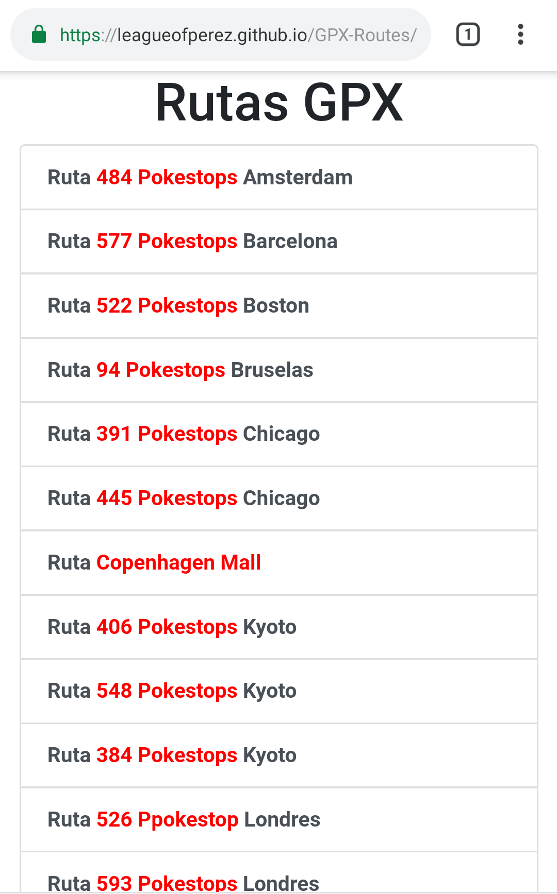
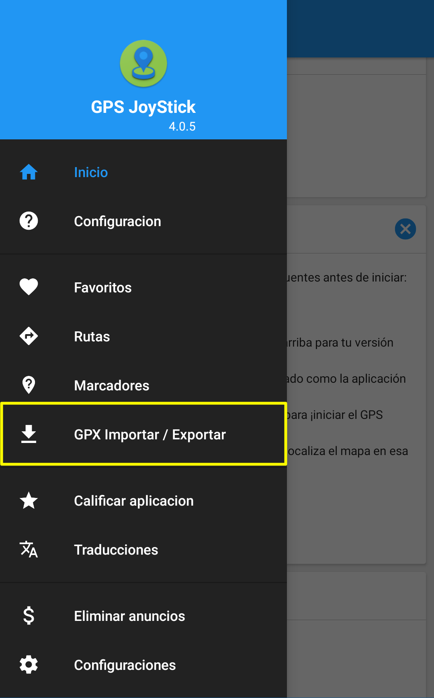
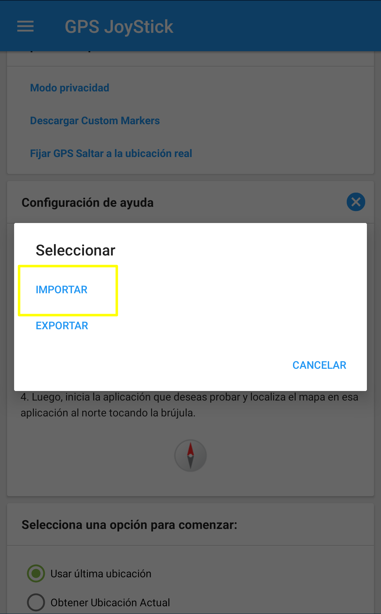
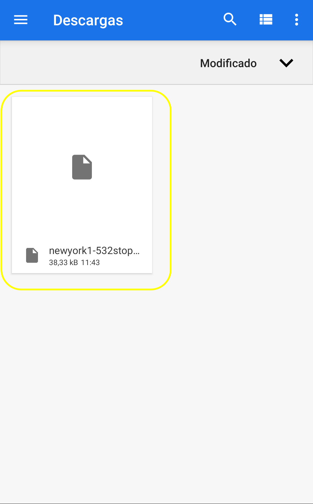
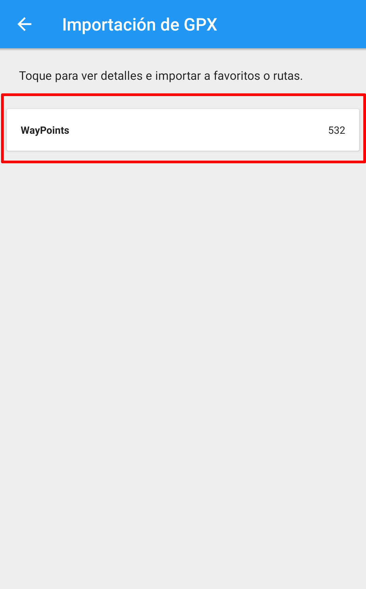
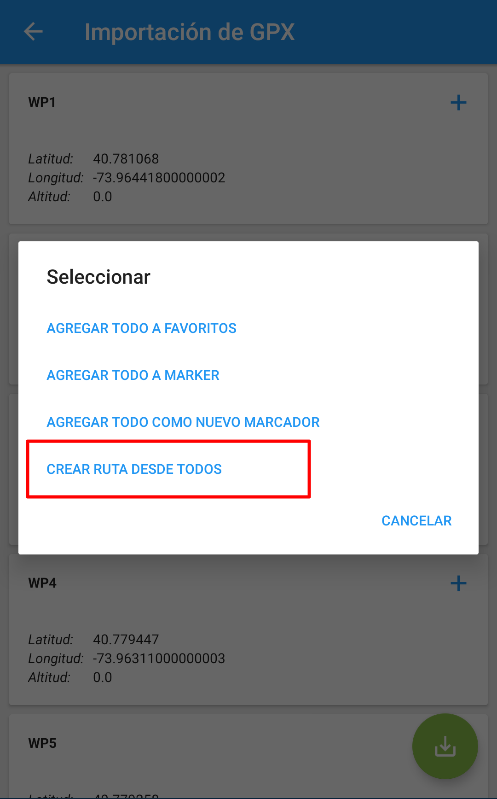
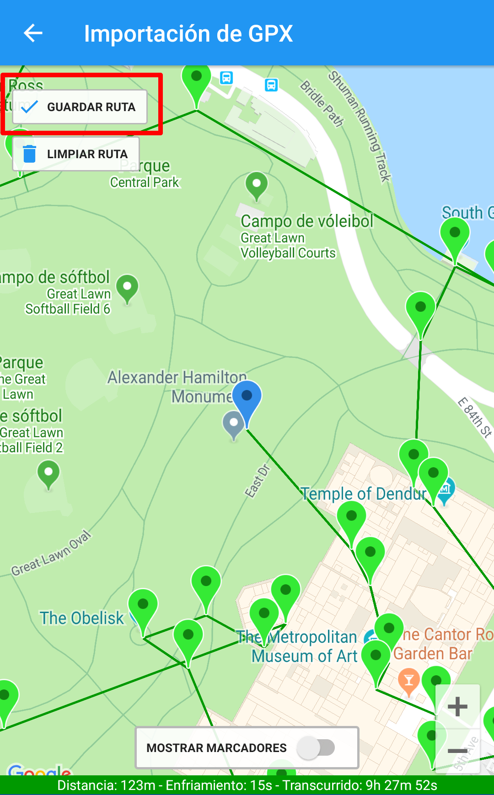
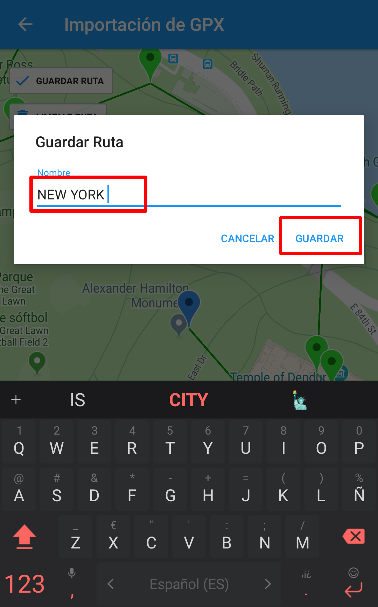
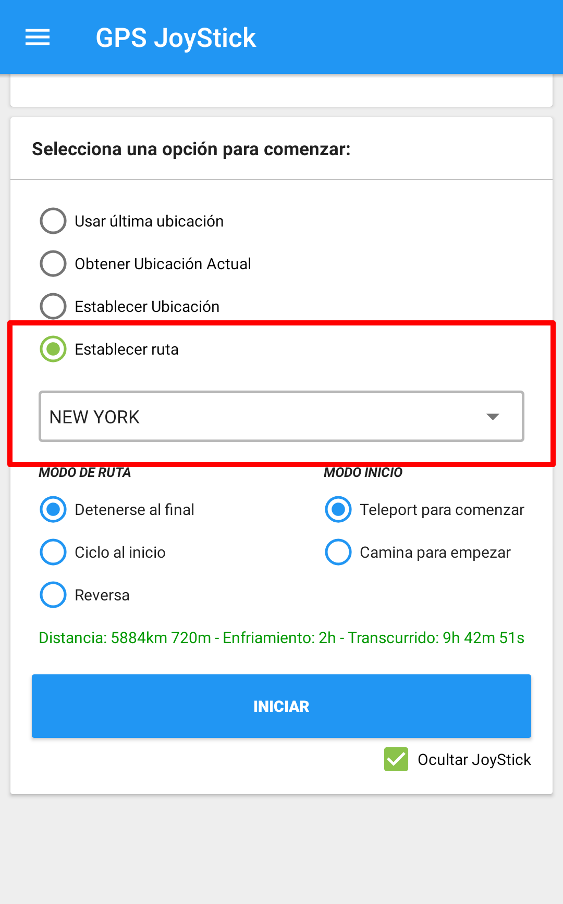

Importar Rutas GPX
1º Visita el siguiente enlace: Descargar rutas GPX y descarga la ruta que quieras de la lista

2º Abre la aplicación de GPS Joystick y selecciona "GPX Importar/Exportar"

3º Selecciona "Importar"

4º Selecciona el archivo GPX que has descargado

5º Selecciona donde dice "Waypoints"

6º Selecciona el icono de abajo a la derecha

7º Selecciona "Crear tuta desde todos"

8º Selecciona "Guardar ruta"

9º Asigna un nombre descriptivo a la ruta y selecciona "Guardar"

10º Selecciona la ruta que quieres usar y... ¡A volar!
